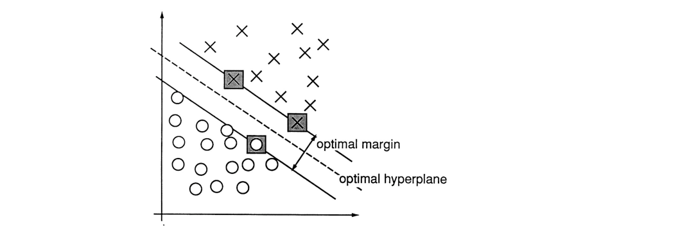

On this page
The maximum-margin classifier, with interactive toys.
Support vector machines find the boundary with the most room on both sides.
Quick question. Two classifiers get every training point right. One of them squeaks by, with points sitting a hair from the boundary. The other keeps every point a mile away from it. Same training accuracy. Which one do you trust on data it has never seen?
Yeah. The confident one. That instinct is the entire SVM.
Here is how I picture it. You have two neighborhoods, blue houses on one side, orange houses on the other, and you need to draw the line between them. Plenty of lines miss all the houses. The sane move is the maximum margin: the boundary with the most room on both sides before it touches a point. A wide margin means a new point near the edge still lands on the right side. A narrow margin means one slightly-off measurement and you are in the wrong neighborhood.
The margin, schematically. The solid line is the decision boundary, the dashed lines are the margin boundaries, and the pale band between them is the margin itself. The three ringed points are the support vectors: the only points the margin touches, and the only ones that decide where it goes.
Now the punchline of the diagram. The margin's edges touch exactly three points. Those points decide where the boundary goes. Move any other house and the boundary does not budge; nudge one of those three and the whole boundary has to shift. Those are the support vectors: the only points that matter. The name sounds fancy. It just means "the points the margin rests on."
One beautiful sentence: think of an SVM as a neural network that minimizes the hinge loss. A plain linear model, each point scored from its features, trained with the hinge loss.
The loss asks one question: is the model right with room to spare? The label times the score is positive when the model picks the right side, and bigger means more confident. Past a margin of 1 the loss flatlines at zero, so only wrong or borderline predictions cost anything.
One gotcha before we move on: the hinge never rewards being extra right. Once the model is right with room to spare, the loss is flat zero. No gold stars for overconfidence. The model only cares about getting everyone to "confident enough," then it relaxes.
Now the margin. The decision line is where the score is zero, and the margin boundaries are the lines where the score hits +1 and -1. The width of the margin is 2 divided by the length of the weights: bigger weights make the score change faster as you move, so you reach the margin sooner and the margin narrows. Halve the weights and the margin doubles. So "widen the margin" is exactly "shrink the weights," and the training objective is just that, plus the hinge:
The objective is a deal: two charges, the margin charge and the hinge charge the formula gloss spells out, with C setting the exchange rate.
Gotcha number two, and people mix this up constantly: C is not a learning rate. It does not change how fast training runs. It changes what the model is willing to trade: margin width for violations. The soft-margin toy runs on one dial, C.
How do you actually train it? Plain gradient descent on the objective, exactly like the notebook did with PyTorch autograd (automatic gradients) and SGD (stochastic gradient descent) for 1000 epochs. The hinge has a kink at the margin boundary where the gradient is not defined, so you use the subgradient, which in code is just a rule: if a point is still short of the margin, nudge the weights toward its label; otherwise leave that point alone. The toy runs that same loop live, by hand, no autograd.
Find the widest separator: shrink the weights (which widens the margin) while keeping every point on the correct side with room to spare. Here w is the weights: smaller weights, wider margin, yi and xi are one labeled training point and its label: every point constrains the boundary, and the closest ones become the support vectors, b is the offset, ‖‖ is the norm: length of, min is the smallest value of, s.t. is subject to: the constraint, ≥ is at least, ² is squared: the value times itself, and · is the dot product: how aligned two vectors are. The second line is the kernel trick: instead of lifting points into high dimensions by hand, compute their dot product up there directly from down here. K is the kernel: a similarity score for a pair of points, φ is the lift into higher dimensions: makes the flat cut possible, and z is a second point, paired with x.
The hinge and the full objective, written as formulas. Here fi is the point's score, each point scored from its features, and yi times the score is positive when the model picks the right side: past a margin of 1 the loss flatlines at zero, which is what the max with 0 says. J charges for narrow margins (big weights, big penalty) and charges for every point that is wrong or nervous (the average hinge loss), with C setting the exchange rate. The tool code trains on exactly this objective.
Here is the whole algorithm as a walkthrough, on a small hand-set example. Five steps: plenty of separators, the closest pair, the widest margin, a case no line can solve, and the kernel trick.
w the weights: smaller weights, wider marginyi, xi one labeled training point and its label: every point constrains the boundary, and the closest ones become the support vectorsK the kernel: a similarity score for a pair of points; φ the lift into higher dimensions: makes the flat cut possible; z a second point, paired with xb the offset‖‖ norm: length of; min the smallest value of; s.t. subject to: the constraint; ≥ at least; ² squared: the value times itself· dot product: how aligned two vectors areHow to play
Same setup as the notebook: a 2D classification problem, a linear model, the hinge loss, trained with plain subgradient descent. One dial: C, on a log scale from 0.01 to 1000. The margin, its boundaries, and the ringed support vectors all move with that one dial.
At 0.01, the bottom of the dial, the margin is enormous, wider than the whole plot, and all 400 points sit inside it, every one of them a "support vector." The model barely cares about violations, so it buys the widest margin it can. At 1000, the top of the dial, the margin has squeezed down to a width of about 0.56 data units, only 46 points still touch or violate the margin boundaries, and the rest are outside, safely classified. Same data, same loss, same optimizer. The only thing that changed is what violations cost.
Notice what didn't change: the number of misclassified points stays around 15 to 19 across the whole sweep. Those are the points sitting in the overlap between the two clouds, and no margin placement can save all of them. C does not buy accuracy here; it buys a different kind of correctness. Cheap violations: a wide, forgiving margin that lets points slide. Expensive violations: a narrow, strict margin that pulls every point it can outside the margin boundaries.
This is also why the support vectors matter so much. At 1000, 46 points decide everything and the other 354 could be deleted without moving the boundary a pixel. There is a classic bound behind this: the expected error is at most the expected fraction of training points that end up as support vectors (Cortes and Vapnik, 1995). Few support vectors, good generalization. That is the whole theory of the SVM in one sentence.
How to play
0.01 to 1000.For the record, the notebook's own training run looked like this: 1000 epochs of SGD on the hinge loss. The toy in Wide margins forgive, narrow margins do not runs the same subgradient loop, just with the C dial exposed so you can feel the tradeoff instead of reading about it.
The step-through ended with the kernel trick: lift the data, then cut it flat. In practice you never do the lifting by hand. You pick a kernel, which is the SVM's way of choosing what shapes the boundary is allowed to take.
The data here is one ring inside another, and the question is how far each point's reach goes.
RBF (radial basis function, the Gaussian-bump kernel) brings a second dial, gamma: how far each point's influence reaches. Small gamma makes the boundary smooth and far-reaching; large gamma lets each point convince only its neighbors, and the boundary gets wiggly. A new point is classified by adding up those influences: every support vector votes for its own class, its vote fades with distance at the rate gamma sets, and the point takes the side whose votes add up stronger. The boundary is where the two sides' votes exactly cancel. Tune C and gamma together with cross-validation, never one at a time.
For low-dimensional data with curves, like the rings in this tool, RBF is the default. It lets the boundary wrap around each cluster. Polynomial sits between the two, and I rarely reach for it first.
When the features already outnumber the points, text is the classic case, linear usually wins. A straight cut in a huge space is already flexible, and a curvy kernel mostly buys overfitting.
One more gotcha: kernels get expensive on big data, because the kernel matrix grows with the square of the dataset size. Past tens of thousands of points, people usually switch to a linear SVM or approximate the kernel.
The RBF kernel, written as a formula: K is a similarity score for a pair of points, x and z, γ is gamma: how far each point's influence reaches, and the exponent is gamma times the squared distance between the pair, negated, so nearby pairs score near 1 and far pairs fade toward 0. The tool code computes exactly this exponential for every pair of points.
How to play
The C dial in Wide margins forgive, narrow margins do not is the soft-margin variant: it sets the price of violations.
Regression gets its own flavor, support vector regression: instead of a margin between classes, it draws a tube around the predictions and only charges for points that fall outside the tube.
One-class SVM flips the question: given only normal examples, it draws the boundary around them, and anything outside is an anomaly.
This is the figure from the paper that introduced the soft-margin classifier (Cortes and Vapnik, 1995). It shows a separable two-dimensional problem: crosses are one class, circles the other. The dashed line is the optimal hyperplane (the best separating line), the two solid lines are the margin boundaries, and the grey squares are the support vectors. The figure's whole claim is the method in miniature: the support vectors alone define the widest separation between the two classes.
